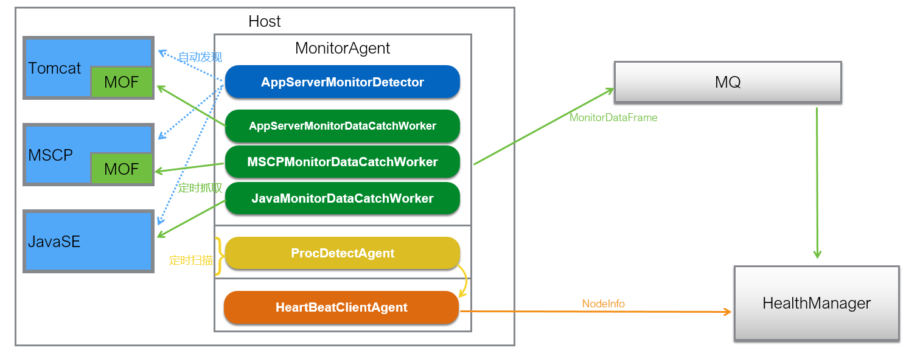
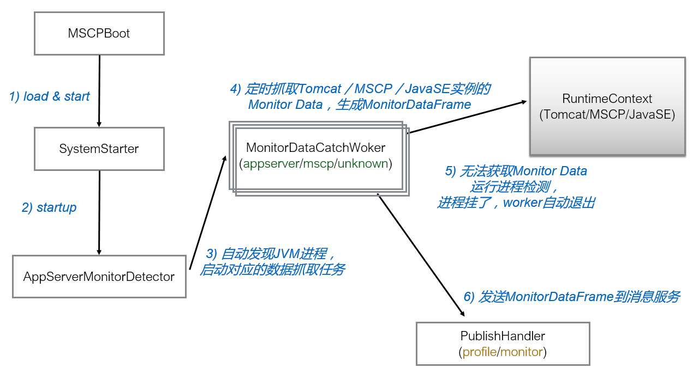

监控代理程序
MA架构
MA的实现架构如下图所示：

MA是一个agent，用于解耦，在application外独立运行。MA用于定时抓取MOF中的信息、自动发现Tomcat、MSCP、JavaEE中的信息并获取更多推导的监控信息。之后MA中的数据通过Rocketmq到达HealthManager。
MA获取的值来自两部分：
- MonitorFramework在J2EE工程中埋点，MA从中取值
- MA从系统中获取参数值
MA的运行机制为：

- MSCPBoot作为MSCP的程序入口，在启动时调用SystemStarter的startup方法。
- 在SystemStarter启动时会调用MonitorAgent的start方法，在此方法中调用AppServerMonitorDetector的run方法。
- 在run方法中获取所有的JVM进程，并启动对应数据的抓取任务及判断是否占用性能太多而需要自杀。
- 在AppServerMonitorDetector的addWorker方法中，根据jvmType的不同值来定时抓取Tomcat/MSCP/JavaSE的Monitor Data并生成MonitorDataFrame。
- 若无法获取Monitor Data，运行进程检测，若进程死掉，则相关worker自动退出。
- 将MonitorDataFrame发送到Rocketmq，最终到达HealthManager进行处理。其中收集的消息分为profile数据和monitor数据，前者为系统静态数据，后者为实时监控数据。